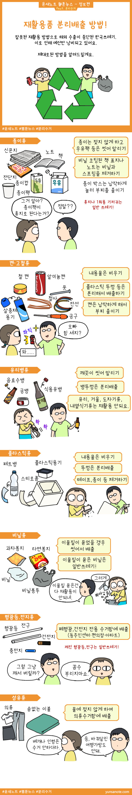

재활용품 분리배출 방법!

최근 재활용 쓰레기와 1회용품에 대한 이슈가 상당히 크답니다. 그래서 재활용하는 방법에 대해서 준비해 보았습니다.
재활용을 재대로 하지 못해 중국, 필리핀 등에 수출하다 이제는 더 이상 수출길이 막혀버렸습니다. 바로 옆 일본이나 다른 국가에서는 정상적인 수출이 되고 있으나 우리나라만 막힌 것에 대해 외교문제가 있는거 아니냐는 말도 나오는데 아니예요.
그냥 우리나라가 분리배출을 못해서 안받는거라고 하네요. 재대로 알려주는 곳도 없었고, 배우지도 못한 재활용품 배출방법, 한번에 잘할 수는 없겠지만 이제 조금씩 해가면서 익숙해져 보는건 어떨까요?
너무 큰 예산낭비를 우리가 잡아야 한국땅에 또 다시 쓰레기를 매립하여 논란이 생기는 일은 없을테니까요. ㅎㅎ